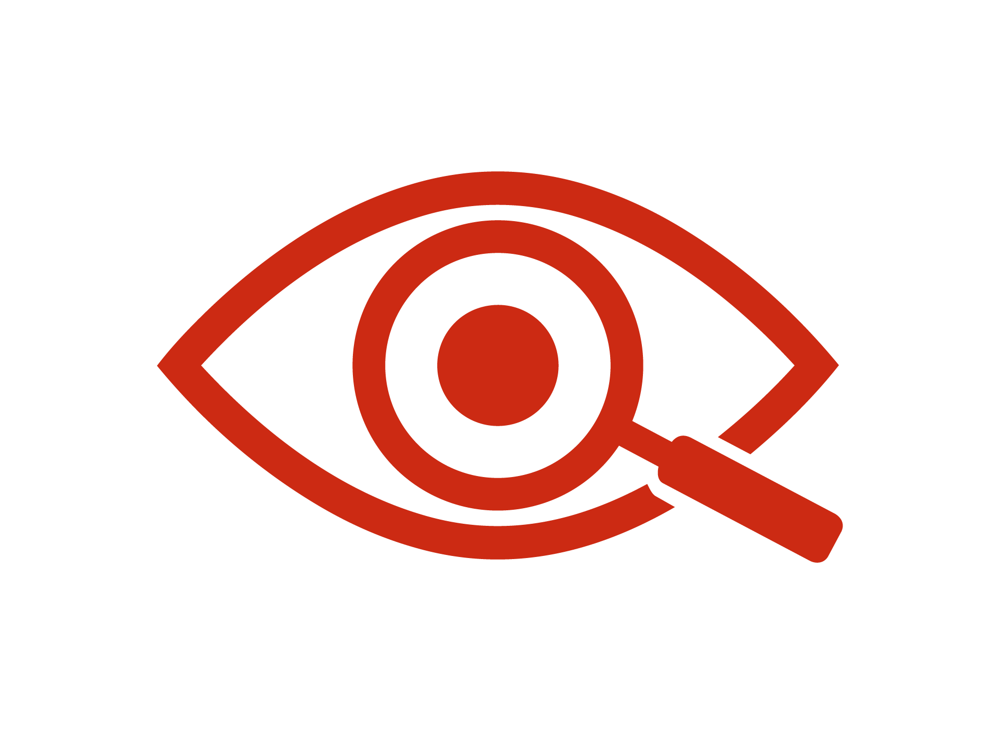

Lanzamiento oficial del portal MLC
18 de Abril, 2026
Hoy lanzamos oficialmente la plataforma de Monitoreo Liderado por la Comunidad, un hito en la democratización de los datos de salud en Guatemala.
Leer más
Análisis, lecturas y noticias derivadas de los datos del MLC. Conoce cómo evoluciona la respuesta comunitaria al VIH en Guatemala y los aprendizajes generados con la participación de las comunidades.
18 de Abril, 2026
Hoy lanzamos oficialmente la plataforma de Monitoreo Liderado por la Comunidad, un hito en la democratización de los datos de salud en Guatemala.
Leer más10 de Abril, 2026
150 monitores comunitarios completaron su capacitación en cinco regiones participantes y están listos para iniciar la recolección de datos.
Leer más5 de Abril, 2026
Los primeros indicadores ya están disponibles en el dashboard. Explora los datos de disponibilidad, accesibilidad y aceptabilidad de los servicios.
Ver DashboardCompara indicadores entre diferentes unidades de atención para identificar patrones y mejores prácticas.
El proyecto se expande a tres nuevas regiones. Buscamos monitores comunitarios y prestadores interesados.
Diálogo comunitario con presentación de resultados y discusión de acciones de mejora con usuarios y prestadores.
Marzo 2026 — Cinco talleres regionales de capacitación para monitores comunitarios.
Febrero 2026 — Primeras reuniones de acercamiento con prestadores de servicios de salud.
Enero 2026 — Lanzamiento oficial del proyecto MLC con autoridades locales.